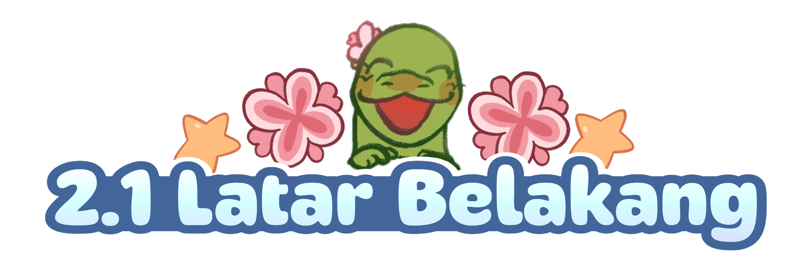

Integrated Learning merupakan kegiatan pembelajaran yang menghubungkan berbagai mata pelajaran melalui tema tertentu. Bertujuan untuk mengembangkan keterampilan siswi. Kegiatan Integrated Learning di SMP Santa Ursula Jakarta dilaksanakan dari kelas VII, VIII, sampai IX dan dilaksanakan pada hari Rabu, Kamis, dan Jumat. Integrated Learning dapat dalam berbagai bentuk seperti laporan, majalah, bazar, dan maket. Di kelas 9 ini, proyek Integrated Learning terdiri atas 10 mata pelajaran yang diwujudkan dalam bentuk bazar dan pentas seni. Proyek Integrated Learning ini bertujuan untuk memberikan kesempatan bagi siswi-siswi SMP Santa Ursula Jakarta kelas IX untuk mendapatkan pengalaman praktik secara langsung pelajaran-pelajaran yang dipelajari. Proyek ini sangat penting terutama agar siswi dapat semakin merasakan dan mengetahui cara mengimplementasikan pelajaran yang diberikan di sekolah dalam kehidupan sehari-hari dan di masa yang mendatang.
Bazar adalah pasar sementara yang diselenggarakan khusus dalam jangka waktu beberapa hari, di mana berbagai pedagang berkumpul di satu lokasi. Tujuannya adalah untuk menjual produk seperti makanan, minuman, pakaian, kerajinan, aksesoris. Untuk pelaksanaan proyek Integrated Learning ini, kegiatan bazar dan pentas seni terbagi menjadi 2 hari. Bazar kelas 91 dan 94 dilaksanakan di hari pertama pada hari Selasa, 3 Februari 2026, dengan kelas 92, 93, dan 95 menampilkan penampilan mereka di panggung ceria. Sedangkan bazar kelas 92, 93, dan 95 dilaksanakan di hari kedua pada hari Kamis, 5 Februari 2026, dengan kelas 91 dan 94 menampilkan penampilan mereka di panggung. Tak hanya penampilan dan menjual produk, terdapat sebuah pameran dan seminar dari organisasi Kreatable dan The Fiorire Project. Pameran Kreatable dilaksanakan di aula dan menunjukkan berbagai karya kreatif dan hasil pelajaran siswi SMP Santa Ursula Jakarta. Seminar The Fiorire Project dilaksanakan di ruang teater dengan tema “LIGHT : Living in Growth Serving Through Harmony and Trust” yang dijelaskan oleh 2 narasumber dan diikuti oleh siswi serta tamu undangan. Pelaksanaan proyek Integrated Learning tersebut menjadi lebih ramai, aktif, seru, dan menarik.
Dalam proyek Integrated Learning yang kelompok lakukan, terdapat kolaborasi dari 10 mata pelajaran yaitu Bahasa Indonesia (laporan, promosi poster dan iklan), Bahasa Inggris (label produk, deskripsi produk, abstrak), Agama (melakukan bantuan sosial dengan hasil dari penjualan), Teknologi Informatika (website bazar), IPA (bioteknologi dan teknologi ramah lingkungan), Kesenian (penampilan musik, produk jahit, dan produk makanan), Penjaskes (senam irama), PPKN (produk), IPS (strategi penjualan, dan laporan keuangan), dan Matematika (statistika hasil jualan). Proses melaksanakan dan mempersiapkan bazar dan penampilan membantu kelompok untuk semakin memahami dan mempelajari secara langsung setiap pelajaran yang ada. Proses pelaksanaan proyek ini dimulai dari penentuan tema, penentuan nama toko, penentuan produk, dan juga latihan pertunjukkan. Dengan adanya proyek ini, kelompok mendapatkan kesempatan untuk mempraktikkan pelajaran-pelajaran yang biasanya hanya dipelajari secara teori di kelas. Contohnya membuat bioteknologi di mana kelompok belajar untuk memanfaatkan bakteri asam laktat (Lactobacillus bulgaricus) dalam pembuatan produk bioteknologi yang dijual di bazar kelompok yaitu Frozen Yoghurt. Proyek Integrated Learning ini memiliki tujuan utama pembuatan untuk membantu para siswi kelas 9 untuk semakin memahami konsep mata pelajaran yang ada di sekolah dan juga untuk menambah pengalaman praktik secara langsung materi-materi pelajaran yang ada di sekolah. Pelajaran-pelajaran yang kami dapatkan dari proyek ini mencakup sebagian besar dari materi pembelajaran kelas 9. Mulai dari membuat teknologi ramah lingkungan dan bioteknologi hingga laporan keuangan dan juga promosi produk. Proyek ini melatih semua kelompok untuk mengatur waktu dengan baik, bekerja sama, dan juga menambah kemampuan kita untuk menerapkan pelajaran kita pada kehidupan sehari-hari.
Tujuan proyek Bazaar ini adalah untuk mengembangkan kreativitas siswi dalam merancang dan menciptakan produk-produk yang menarik, sehingga dapat bersaing dan diminati oleh pembeli di lingkungan sekolah. Melatih kemampuan manajemen keuangan siswi dengan bijak dengan cara mencatat pemasukan dan pengeluaran, mengelola modal usaha, serta menghitung keuntungan yang dihasilkan dalam penjualan bazar melalui pembuatan laporan keuangan. Melatih kemampuan teknologi siswi dalam merancang dan membuat website serta video-video promosi agar pembeli merasa menarik untuk membeli produk, sekaligus meningkatkan kerja sama dan tanggung jawab antar anggota kelompok dalam menyelesaikan kegiatan bazar dengan baik dan lancar.
• Memperluas wawasan mengenai tradisi dan budaya khas Indonesia.
• Meningkatkan kemampuan untuk berkomunikasi dan berdinamika antar siswi.
• Menambah pengetahuan mengenai proses jual beli dan wirausaha.
• Meningkatkan partisipasi warga sekolah guru, karyawan, dan siswi dalam pembelajaran
• Menjadi suatu bahan promosi yang dapat digunakan sekolah untuk masyarakat luar sekolah.
• Mengetahui batas kemampuan siswi kelas IX dalam mengimplementasikan pelajaran sekolah secara langsung.
• Kesempatan untuk mempelajari dan mengetahui kegiatan proyek yang dilaksanakan di SMP Santa Ursula Jakarta. (orang tua murid dan masyarakat umum)
• Mendapatkan inspirasi dan pengalaman baru untuk pelaksanaan proyek dan metode pembelajaran di instansi lain (sekolah-sekolah undangan).
• Menikmati hasil produk yang telah dibuat oleh kelas IX.
• Memenuhi nilai ujian kelulusan praktik kelompok kami.
• Mendapatkan kesempatan untuk lebih memahami pembelajaran melalui penerapan secara langsung.
• Mempelajari nilai-nilai tambahan seperti kerja sama, pantang menyerah, integritas, dan totalitas